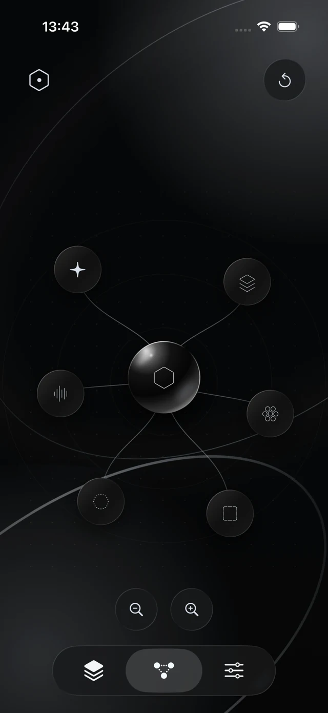
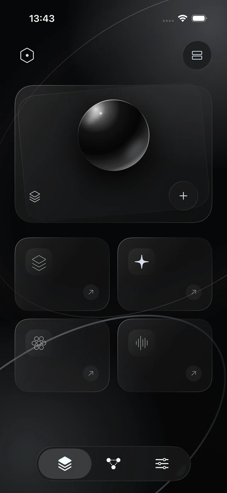
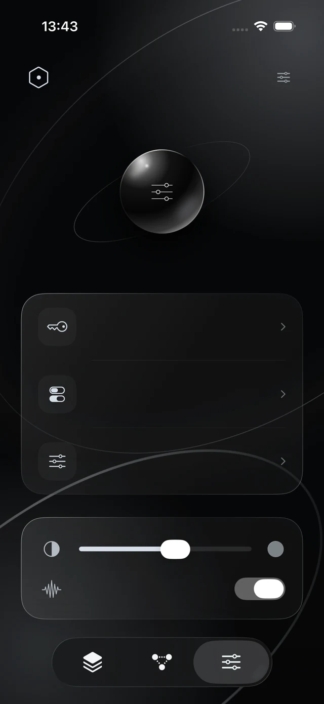

Choose the evidence
Import supported text or code files, inspect their snapshots, and explicitly select the material for each task.
Independent iOS project
Your evidence. Your intelligence. Your judgment.
A personal workspace that turns selected materials into structured reasoning and reviewable next steps. Built in SwiftUI, powered by the models you choose.
Explore the interface
01 / The idea
Nexus began as a private, Markdown-and-Git decision system: capture, structure, act, observe, and calibrate. The current iOS project explores how that evidence loop can become a focused, independent intelligence workspace.
02 / Interface
Actual simulator captures from the project’s interface study. The connected nodes are navigation elements.

A visual home for the workspace’s materials and capability entry points.
A spatial navigation study linking the workspace’s different surfaces.

A dedicated surface for preferences, model configuration, and API credentials.
03 / Current implementation
Import supported text or code files, inspect their snapshots, and explicitly select the material for each task.
Configure your own model and endpoint. API credentials stay in the device’s Keychain; requests run independently of a desktop host.
Read structured facts, assumptions, alternatives, counterarguments, and proposed actions, with references back to selected source snapshots.
Review the recipient, sources, and limits before submission. The foreground harness supports finite model calls and read-only tools over selected files.
04 / Engineering
The app separates presentation, reasoning contracts, execution, and provider access. This keeps the interface independent from request construction and makes the reasoning flow testable with offline fixtures.
05 / Project status
The native app, model gateway, and bounded execution paths are implemented and exercised with offline fixtures. Live-provider acceptance and real-world usefulness remain to be verified. This page presents the project; public app distribution is not currently available.
Back to Code